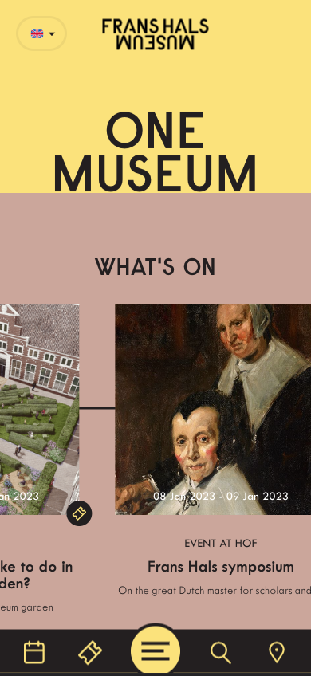
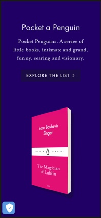

Rule of Thirds
Frans Hals Museum
Looking at it we can clearly see that there are three sections vertically. This kind of makes us focus on the middle of the page.
Visual Heirachy
Huncwot
This page employs the use of white space and visual heirachy to make you focus on the name of the page.
White Space
Pocket Penguins
This website is able to use white space effectively to show emphasis on one part of the website at a time.